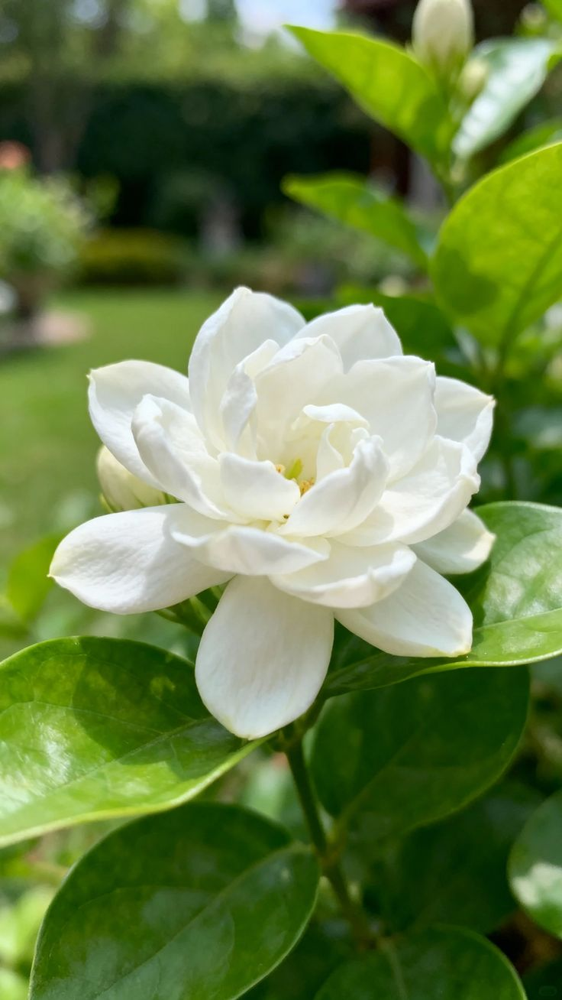
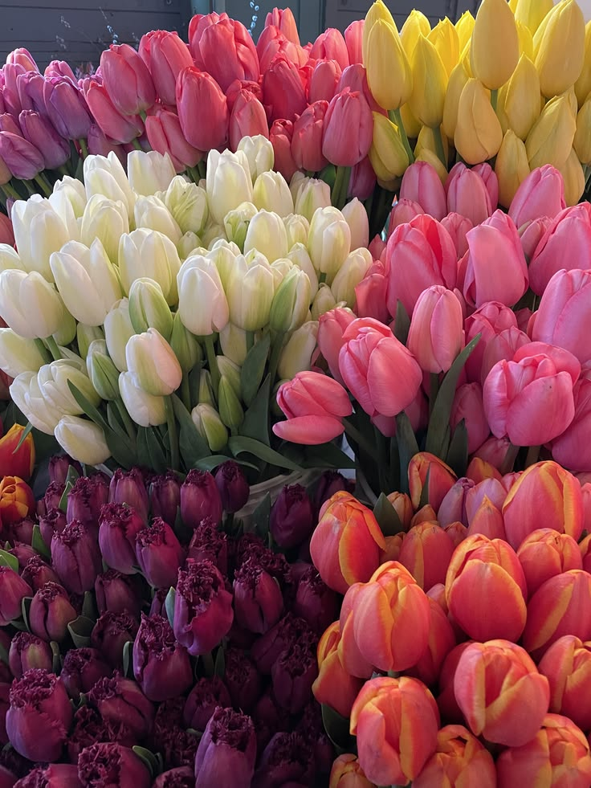
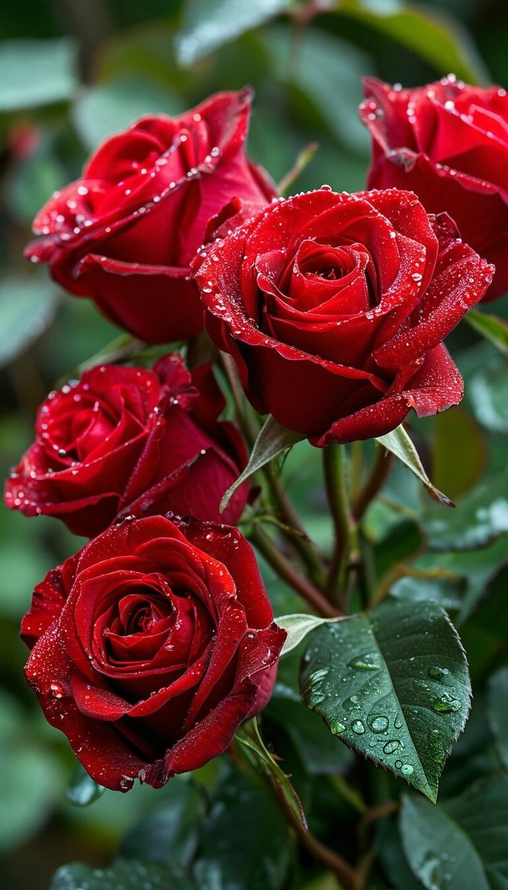
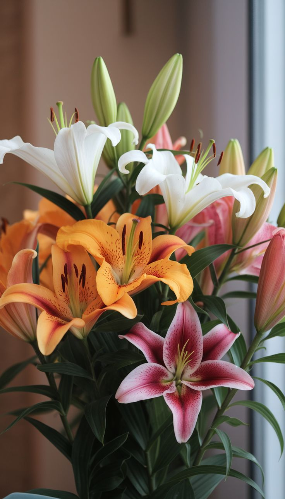
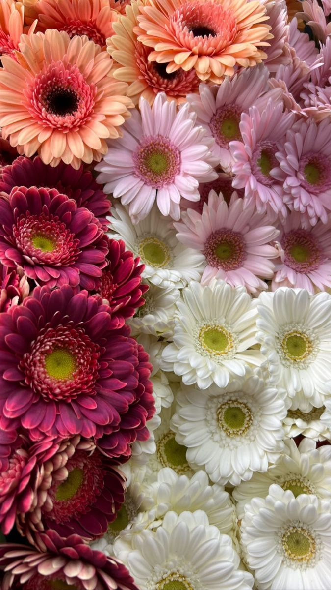
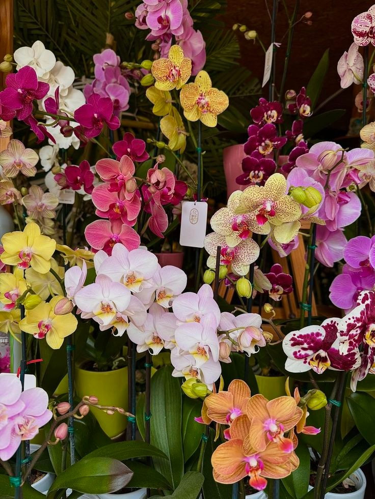
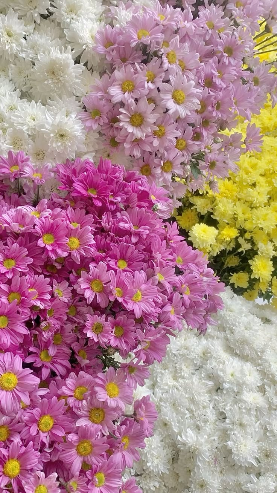

Hover over a flower to discover its secrets

One of the most precious flowers in luxury perfumery. Its sweet fragrance is released particularly at night.

The Tulip is the ultimate symbol of spring. Originally from the steppes of Central Asia, it embodies elegance and the perfect declaration of love. It blooms between March and May and exists in almost every imaginable color. The Netherlands is the world's largest producer, with entire fields transforming into breathtaking colorful landscapes.

The Rose is considered the queen of all flowers. It universally symbolizes love, passion and beauty. With more than 300 species and thousands of varieties, it blooms throughout the year and fills gardens with its enchanting fragrance. It thrives in full sunlight and can reach up to 3 meters in height depending on the variety.
The Sunflower is a joyful and radiant flower that literally follows the sun in its daily course, a fascinating phenomenon known as heliotropism. Native to North America, it symbolizes adoration, vitality and happiness. It blooms in the height of summer and can exceed 3 meters in height, forming luminous natural walls under the bright sun.

The Lily is the flower of purity and nobility. Historically linked to French royalty and the Virgin Mary, it captivates with its powerful yet delicate fragrance, highly prized in luxury perfumery. It blooms in summer and can reach 1.5 meters in height, offering a majestic presence in any sunny garden.

The Gerbera is a cheerful and vibrant flower, famous for its large, bold blooms and wide variety of colors. Often used to express innocence and cheerfulness, it is the perfect flower to brighten any room. It is highly valued for its ability to last a long time after being cut, making it a favorite for bouquets. Gerberas thrive in the sun and represent pure happiness and positivity

The Orchid is the most diverse flower in the plant kingdom, with more than 28,000 recorded species found all around the world. It symbolizes luxury, rare beauty and refined love. Present on every continent, it adapts to a wide variety of environments and blooms throughout the year, preferring soft and indirect light.

The Daisy is the flower of innocence and simplicity. Famous for the popular game "he loves me, he loves me not", it grows naturally in meadows and wild gardens. It blooms from spring through the heart of summer and easily withstands outdoor conditions, bringing a fresh and spontaneous touch to any green space.